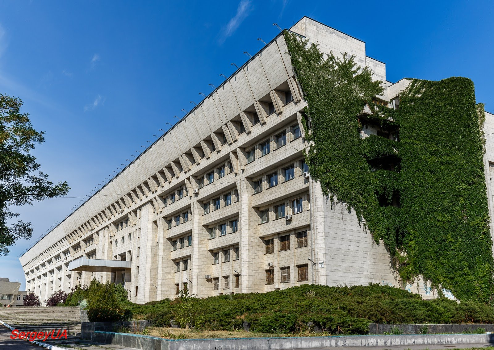
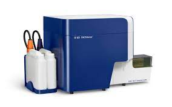

About myself

Hello everybody!
Education
My name is Maryna Shvydka, I am from the city of Lubny, Poltava region.From 2010-2016, I studied at Taras Shevchenko University at the Faculty of Biology. I am a biologist by profession, specializing in immunology.
Work experience
I currently work in a private laboratory as a flow cytometry specialist. With the help of flow cytometry, I find out the state of a person's immune system and diagnose oncohematological diseases. I want to change the field of activity due to a complete lack of prospects.
